matplotlib#
This chapter will look at how to use matplotlib to create graphics in Python. matplotlib plays well with DataFrames and is the most popular way to do data visualization in Python.
Note
When to use matplotlib: Static graphics are best when you need precise control over appearance, are creating figures for papers or reports, or want to save high-quality images. Use matplotlib when the final output is a PNG, PDF, or static presentation slide. For interactive exploration where you want to hover, zoom, and pan, see the plotly chapter instead.
The matplotlib team has an official tutorial. Check it out.
There is, of course, a Datacamp matplotlib cheat sheet.
Chapter 9 of Python for Data Analysis is a nice introduction to the syntax of matplotlib.
Coding for Economists also has a matplotlib guide.
Here is yet another Matplotlib tutorial that goes over how to customize your plots.
Set-up#
Let’s bring in that price data again, along with our libraries. We’ll include matplotlib now. We’re now using the three libraries!
We’ll pull in the data from my Github page. I’ll bring in some prices that come with Python for Finance, 2e. I’ll set the date as my index and drop any row that has missing values (e.g. weekends and holidays). If you look at the raw data, you’ll see that the currencies actually do trade on the weekends.
import numpy as np
import pandas as pd
# This brings in all of matplotlib
import matplotlib as mpl
# This lets us refer to the pyplot part of matplot lib more easily. Just use plt!
import matplotlib.pyplot as plt
# importing the style package
from matplotlib import style
from matplotlib.ticker import StrMethodFormatter
# Keeps warnings from cluttering up our notebook.
import warnings
warnings.filterwarnings('ignore')
# Include this to have plots show up in your Jupyter notebook.
%matplotlib inline
# Read in some eod prices
stocks = pd.read_csv('https://raw.githubusercontent.com/aaiken1/fin-data-analysis-python/main/data/tr_eikon_eod_data.csv',
index_col=0, parse_dates=True)
stocks.dropna(inplace=True)
stocks.info()
<class 'pandas.DataFrame'>
DatetimeIndex: 2138 entries, 2010-01-04 to 2018-06-29
Data columns (total 12 columns):
# Column Non-Null Count Dtype
--- ------ -------------- -----
0 AAPL.O 2138 non-null float64
1 MSFT.O 2138 non-null float64
2 INTC.O 2138 non-null float64
3 AMZN.O 2138 non-null float64
4 GS.N 2138 non-null float64
5 SPY 2138 non-null float64
6 .SPX 2138 non-null float64
7 .VIX 2138 non-null float64
8 EUR= 2138 non-null float64
9 XAU= 2138 non-null float64
10 GDX 2138 non-null float64
11 GLD 2138 non-null float64
dtypes: float64(12)
memory usage: 217.1 KB
The first thing I notice are those column headers. Let’s clean up the variable names using pyjanitor.
from janitor import clean_names
stocks = clean_names(stocks)
stocks.info()
<class 'pandas.DataFrame'>
DatetimeIndex: 2138 entries, 2010-01-04 to 2018-06-29
Data columns (total 12 columns):
# Column Non-Null Count Dtype
--- ------ -------------- -----
0 aapl_o 2138 non-null float64
1 msft_o 2138 non-null float64
2 intc_o 2138 non-null float64
3 amzn_o 2138 non-null float64
4 gs_n 2138 non-null float64
5 spy 2138 non-null float64
6 _spx 2138 non-null float64
7 _vix 2138 non-null float64
8 eur= 2138 non-null float64
9 xau= 2138 non-null float64
10 gdx 2138 non-null float64
11 gld 2138 non-null float64
dtypes: float64(12)
memory usage: 217.1 KB
That’s a little better. You could do more with some string functions, like getting rid of the “o”, “”, and “=”.
If you don’t have janitor installed, you’ll need to run in a code cell above your set-up code. You should only have to install a package once per code space.
pip install pyjanitor
You can read more about janitor here.
Basic plotting with pandas#
Let’s start with a simple example. DataFrames and pandas have their own plot() that comes from matplotlib. This is covered in the second Data Camp assignment.
You can read about .plot() on the Pandas website. The key here - we are creating plots using pandas. These plots are also matplotlib objects, which means that we can do matplotlib things to them. But, pandas and matplotlib are distinct.
Let’s make a simple chart of Apple’s stock price.
stocks.plot.line(y = 'aapl_o')
plt.show()
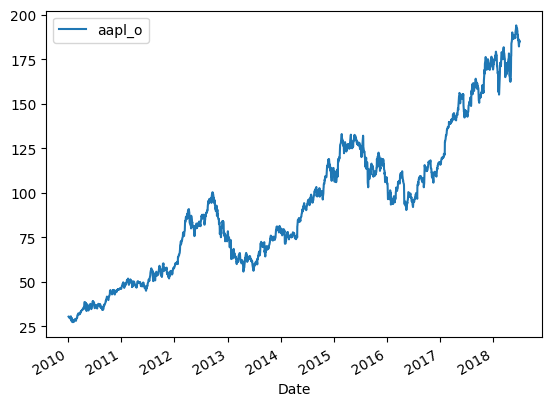
Well, that wasn’t hard! By default, the index (our date) is passed on to the plot as the x-axis. You can change this.
We can also customize this figure. A set of options can be found in Chapter 9 of Python for Data Analysis. The full list can be found in the pandas documentation.
I’ll change a bunch of them so that you can see how.
stocks.plot.line(y = 'aapl_o', alpha = 0.5, title = 'Apple Stock Price', label = 'Apple', color = 'red', figsize = (10,7))
plt.show()
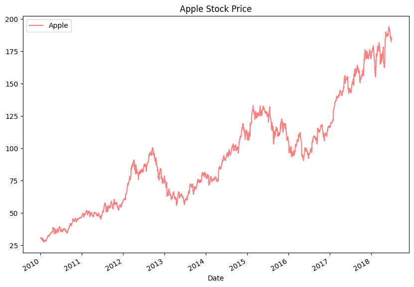
We can make other types of graphs too. Here’s a histogram of Apple’s stock price with 30 bins. We don’t usually look at prices like this, but we’ll get to time series and return data soon enough.
stocks.plot.hist(y = 'aapl_o', bins = 30, alpha = 0.5, title = 'Apple Stock Price', label = 'Apple', figsize = (10,7))
plt.show()
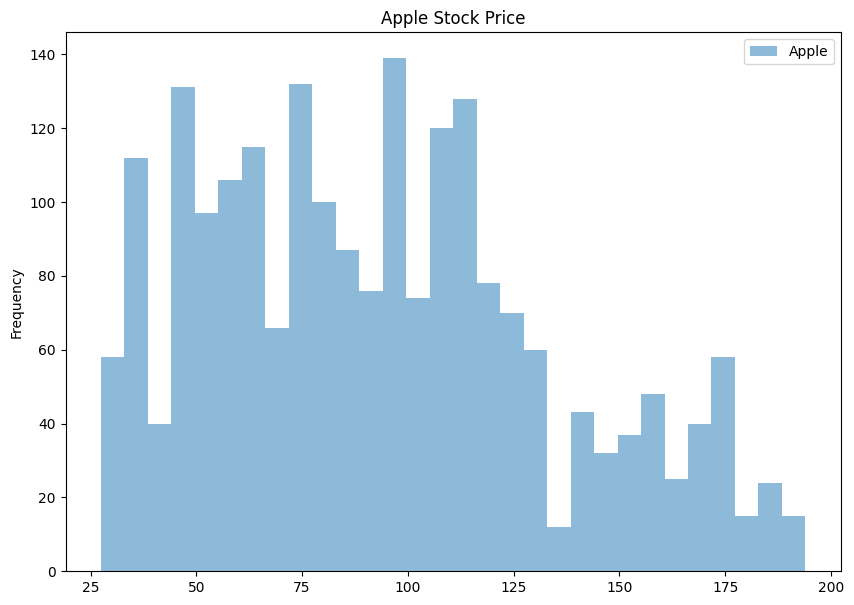
Let’s bring in some other data. This CSV file has different ratios by GICS sector from 2016. So, things like the median book-to-market ratio for the U.S. auto sector.
gics = pd.read_csv('https://raw.githubusercontent.com/aaiken1/fin-data-analysis-python/main/data/ratios_2016.csv')
gics = clean_names(gics)
gics.info()
<class 'pandas.DataFrame'>
RangeIndex: 48 entries, 0 to 47
Data columns (total 13 columns):
# Column Non-Null Count Dtype
--- ------ -------------- -----
0 public_date 48 non-null int64
1 ffi48_desc 48 non-null str
2 nfirm 48 non-null int64
3 indret_ew 48 non-null float64
4 indret_vw 48 non-null float64
5 dpr_median 48 non-null float64
6 bm_median 48 non-null float64
7 pe_exi_median 48 non-null float64
8 gpm_median 48 non-null float64
9 roe_median 48 non-null float64
10 totdebt_invcap_median 48 non-null float64
11 rd_sale_median 48 non-null float64
12 adv_sale_median 48 non-null float64
dtypes: float64(10), int64(2), str(1)
memory usage: 5.0 KB
gics.plot.bar(x='ffi48_desc', y='bm_median', color='blue', alpha=0.7, figsize = (10,7), xlabel='FF48 Industry', ylabel='Median B/M', title = 'Median B/M Ratio by Industry (December 2016)')
plt.show()
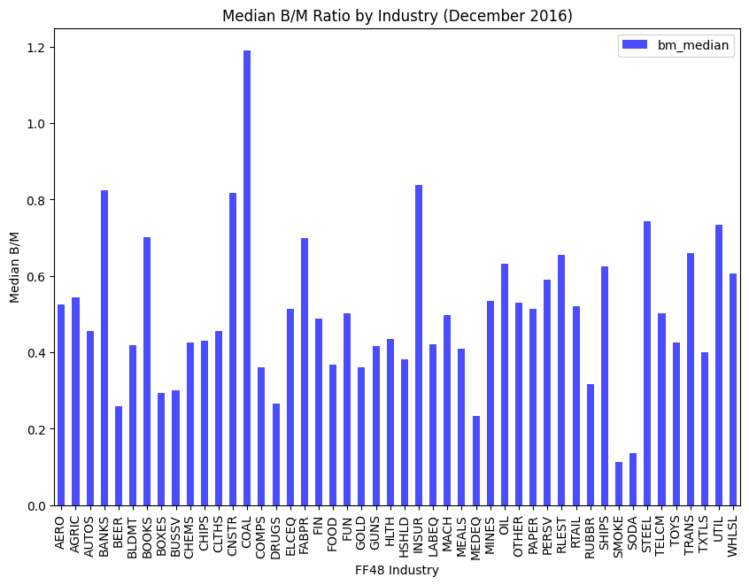
matplotlib#
That was all using the plot() function that comes with pandas DataFrames.
We’re going to follow a few steps and the matplotlib way of doing things now. This means using plt.plot. So, a new library. These steps are:
Create our plot figure
Tell the figure what data to plot.
Customize it
Save it
Show it
The matplotlib way is really two ways. This comes from their official documentation. Both work and both are correct. I’m showing you both syntaxes, since you’ll see both when searching for how to do make graphs.
First way - pyplot#
Let’s go back to the line graph, but do things in separate steps. This is sometimes called the pyplot way of creating figures. You’ll see plt in the syntax, as each line of code uses a method from the pyplot part of matplotlib to add something to your figure.
We can plot data from a DataFrame by using with df.var or df['var'] syntax. I am then going to build my plot step-by-step. It is easier to customize things this way. I will also pull the date index out of each series to use for the x-axis by using stocks.index. Finally, I will plot two series together!
plt.figure(figsize=(10, 6))
plt.plot(stocks.index, stocks.aapl_o, alpha = 0.5, label = 'AAPL', color = 'red')
plt.plot(stocks.index, stocks.msft_o, alpha = 0.5, label = 'MSFT', color = 'blue')
plt.xlabel('Date')
plt.ylabel('Price')
plt.title("Stock Prices")
plt.legend();
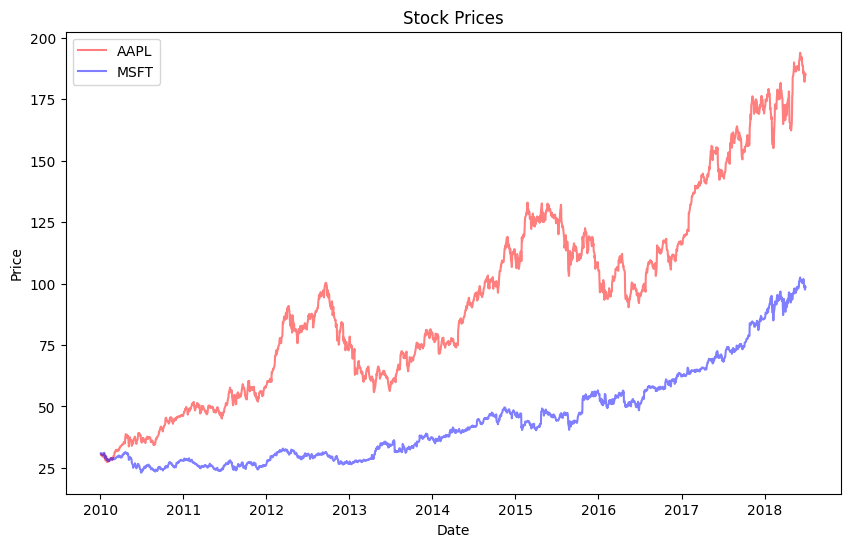
Not bad! By default, we made a line graph. We are layering the different elements of our figure on top of each other until we are finished. Notice that we didn’t need to plt.show() in this case.
The semi-colon at the end just stops Python from printing a message that clutters up our notebook.
Hint
Are your plots not showing up in your Jupyter notebook? Make sure that you include %matplotlib inline as part of your set-up.
Now, what if we wanted those prices on two separate subplots? We can first create a subplot using .subplot. That (211) means create a subplot with 2 rows and 1 column. Then, in the first element (row 1, column 1), put the following plot. We then define the second subplot (row 2, column 1) below that.
plt.figure(figsize=(10, 6))
plt.subplot(211)
plt.plot(stocks.index, stocks.aapl_o, lw=1.5, label='AAPL')
plt.legend(loc=0)
plt.ylabel('Price')
plt.title('AAPL vs. MSFT')
plt.subplot(212)
plt.plot(stocks.index, stocks.msft_o, 'g', lw=1.5, label='MSFT')
plt.legend(loc=0)
plt.xlabel('Date')
plt.ylabel('Price');
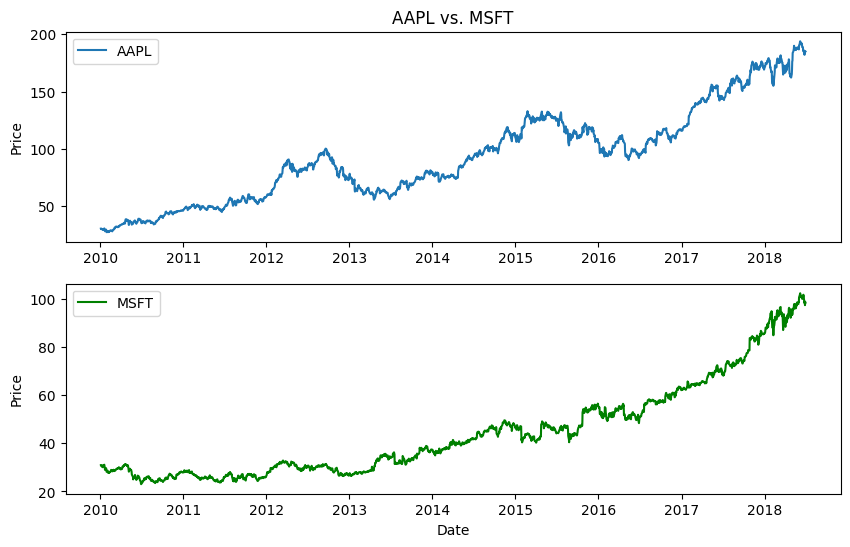
And, there’s absolutely no reason why those graphs have to be the same type or stacked vertically.
plt.figure(figsize=(10, 6))
plt.subplot(121)
plt.plot(stocks.index, stocks.aapl_o, lw=1.5, label='AAPL')
plt.legend(loc=0)
plt.xlabel('Date')
plt.ylabel('Price')
plt.title('Apple Price History')
plt.subplot(122)
plt.hist(stocks.aapl_o, bins=30)
plt.xlabel('Prices')
plt.title('Distribution of Apple Prices');
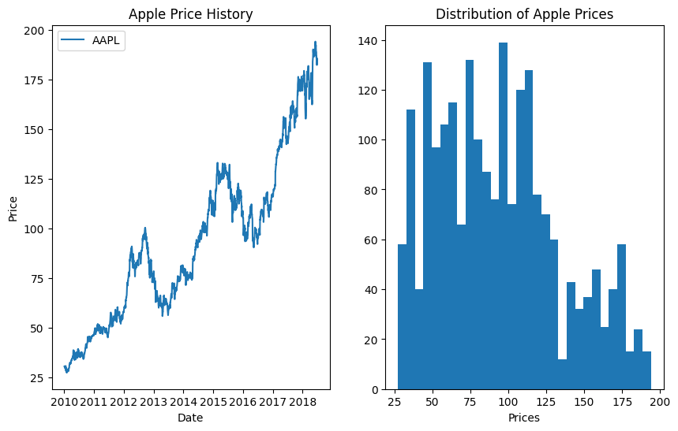
Let’s make a scatter plot using this same workflow. I’m going to convert the aapl and msft prices into returns now. I’ll save the returns to the stocks DataFrame. We’ll do more with this when we get to time series functions.
And, notice how I’m referring to the columns – the names don’t have spaces, so I don’t have to use the square brackets with quotes method.
plt.figure(figsize=(10, 6))
stocks.aapl_ret = np.log(stocks.aapl_o / stocks.aapl_o.shift(1))
stocks.msft_ret = np.log(stocks.msft_o / stocks.msft_o.shift(1))
plt.scatter(stocks.aapl_ret, stocks.msft_ret, marker = 'o')
plt.xlabel('aapl')
plt.ylabel('msft')
plt.title('Apple vs. MSFT');
print('The correlation between AAPL and MSFT is ' + str(stocks.aapl_ret.corr(stocks.msft_ret).round(3)))
The correlation between AAPL and MSFT is 0.411
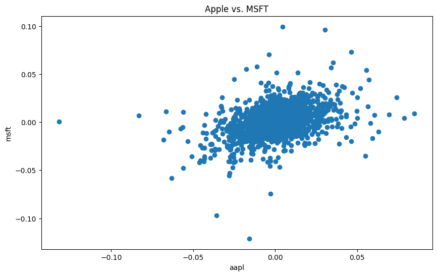
Let’s create a histogram of both returns.
plt.figure(figsize=(10, 6))
plt.hist([stocks.aapl_ret, stocks.msft_ret], label=['AAPL', 'MSFT'], bins=25)
plt.xlabel('Returns')
plt.ylabel('Frequency')
plt.title('Histogram of AAPL and MSFT Returns');
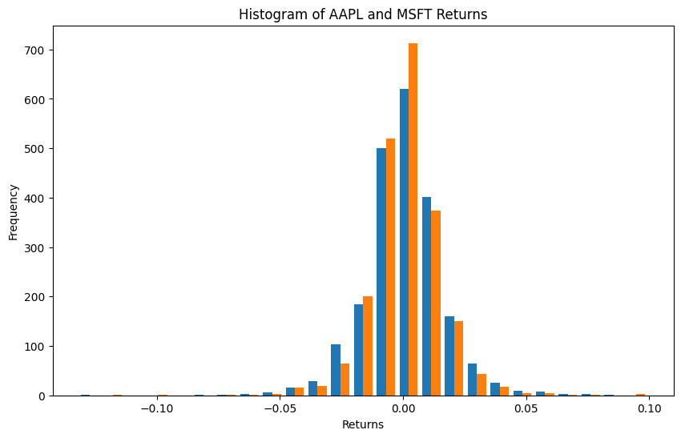
I like how the default colors are the N.Y. Mets for some reason. Notice how I passed plt.hist both series together. We can change the colors if you like.
plt.figure(figsize=(10, 6))
colors = ['grey', 'blue']
plt.hist([stocks.aapl_ret, stocks.msft_ret], label=['AAPL', 'MSFT'], bins=25, color = colors)
plt.xlabel('Returns')
plt.ylabel('Frequency')
plt.title('Histogram of AAPL and MSFT Returns');
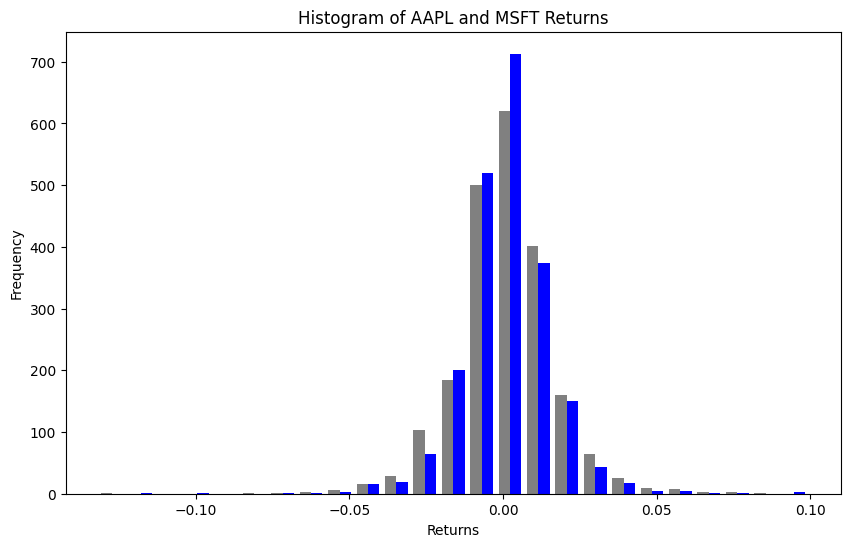
Second way - figs and axs#
matplotlib also lets us work in an object oriented manner. We are going to create different objects that make up the complete figure. Remember, everything in Python is something!
This first step creates a blank figure object. We actually did this above too. A figure is going to have special properties that we can do stuff with. You can also think about the different parts of the plot as different objects to change.
We are also going to create ax objects. The matplotlib documentation says to use the name ax for one plot and axs for multiple plots. These are just naming conventions, though.
fig = plt.figure()
print(type(fig))
ax1 = fig.add_subplot(2, 2, 1)
print(type(ax1))
ax2 = fig.add_subplot(2, 2, 2)
ax3 = fig.add_subplot(2, 2, 3);
<class 'matplotlib.figure.Figure'>
<class 'matplotlib.axes._axes.Axes'>
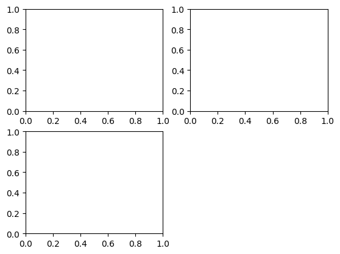
This is like a blank canvas. We can add subplots to this. This is where our graphs will live. We saw this type of subplot logic above. .add_subplot has three arguments .add_subplot(xyz), where x is the number of rows of subplots, y is the number of columns of subplots, and z is the subplot that you are referring to. So, we have created a single axis of a 2 x 2 plot that we will have saved as ax. ax is an axis of this figure. Each subplot is an axis, though I only create one in this example.
We are now using = to create (assign) objects to different names. You’ll see these get created down in the Jupyter: Variables window. These are objects that exist in memory that you can then do things with.
Note
In Jupyter notebooks, you need to run all of your figure creation in a single cell, as it will reset after each cell is executed and you won’t be be able to build on top of your previous statements.
Let’s go back and just create a single plot using this figure and axis object logic. Again, you can think of this as just adding pieces of the figure together. We start with the canvas and how big it is. We add a plot. And then we style things. I even add some random text at a particular date!
Some times the styling method that you need has the exact same syntax as when doing plt.. Other times, it is a little different.
from datetime import datetime
fig = plt.figure(figsize=(10, 6))
ax = fig.add_subplot(1, 1, 1)
ax.plot(stocks.index, stocks.aapl_ret, 'b--', label = 'Apple Daily Returns')
ax.legend(loc='best')
ax.set_xlabel('Date')
ax.set_ylabel('Daily Return')
ax.set_title('Apple Daily Stock Returns')
ax.text(datetime(2015, 12, 8), -0.10, 'Random Text!!!!',
family='monospace', fontsize=10);
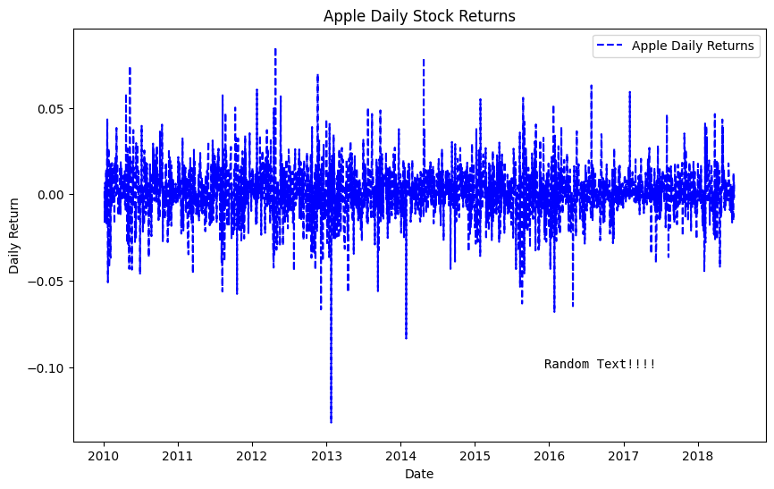
We can condense the code a bit to create fig (the canvas) and axs (the plots) on the same line. plt.subplots() can do everything for us. With no arguments (i.e. nothing inside of the function), it will create a single canvas and plot.
plt.subplots is different from plt.add_subplot. It also creates an array that I’m calling ax, which can can store our plots.
I’ll follow this basic example from the Matplotlib documentation and make a scatter plot of Apple and Microsoft returns again. There’s just one ax in this example, so only one graph or plot.
# Plot
fig, ax = plt.subplots()
ax.scatter(stocks.aapl_ret, stocks.msft_ret)
ax.set(xlim=(-.15, .15), xticks=np.arange(-0.15, 0.18, 0.03),
ylim=(-.15, .15), yticks=np.arange(-0.15, 0.18, 0.03),
title="Daily Returns",
xlabel="AAPL Returns",
ylabel="MSFT Returns")
plt.show()
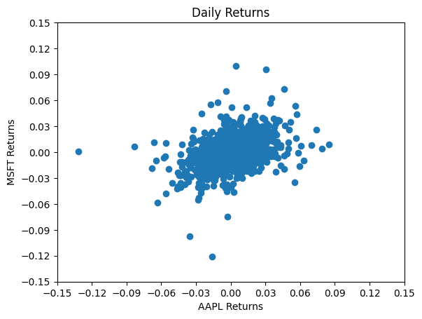
Let’s walk through some of those options a bit. We create the fig and single ax together using plt.subplots() from matplotlib. We then define our ax as a scatter plot.
Next, we change our settings for the ax using ax.set. This method lets me put different options together, rather than do a bunch of separate ax.set_ methods, like in the example above.
These are daily returns, so I’ll let both axis have a lower limit of -15% and an upper limit of 15%. We should check this, of course, by looking at minimum and maximum returns. We can also set the tick marks using np.arange. Remember, this method lets you create an array of numbers. The first argument is the starting point, the second argument is the stopping point (not inclusive), and the third argument is the step size.
I then add a title and labels. Again, ax.set lets me do all of this together.
Finally, notice the plt.show(). You don’t need that in a Jupyter Notebook. But, you do if you’re using a basic .py Python script.
We can use the same figure and axis logic to create a 2 x 2 grid of graphs. This is where you can really start to see the power of this.
Let’s look at that first line. We can again create the fig canvas and the axs together using plt.subplot. This line creates the figure and a 2 x 2 set of axs, where each element is a potential plot. As mentioned above, plt.subplots is different from plt.add_subplot. It can take arguments which normally go to plt.figure, which is why I can change the figure size inside of it. It also creates an array that I’m calling axs. That array is 2 x 2 in this case and is going to hold my four plots.
I use our usual array syntax to create a subplot in each of the four positions. I added some colors so that you can see which plot goes where in the grid. I’m using some random numbers just to demonstrate. I also adjusted the white space around the grid.
The array syntax is convenient and means that I can avoid defining ax1, ax2, ax3, and ax4. I could have done it that way, though!
fig, axs = plt.subplots(2, 2, sharex=True, sharey=True, figsize=(10, 6))
print(type(fig)) # See the output, this is a matplotlib figure object
print(type(axs)) # See the output, this is an array of axs, or graphs/plots!
axs[0,0].hist(np.random.randn(500), bins=50, color='k', alpha=0.5)
axs[1,0].hist(np.random.randn(500), bins=50, color='b', alpha=0.5)
axs[0,1].hist(np.random.randn(500), bins=50, color='r', alpha=0.5)
axs[1,1].hist(np.random.randn(500), bins=50, color='g', alpha=0.5)
plt.subplots_adjust(wspace=0.1, hspace=0.1);
<class 'matplotlib.figure.Figure'>
<class 'numpy.ndarray'>
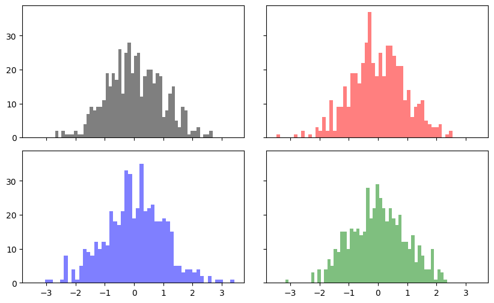
Correlation heatmaps#
We saw heatmaps in the seaborn chapter. Here’s how to create one with pure matplotlib. It’s more work than seaborn’s heatmap(), but it gives you complete control over every element.
# Create returns for multiple assets (using bracket notation to ensure column names are correct)
stocks['aapl_ret'] = np.log(stocks.aapl_o / stocks.aapl_o.shift(1))
stocks['msft_ret'] = np.log(stocks.msft_o / stocks.msft_o.shift(1))
stocks['spy_ret'] = np.log(stocks.spy / stocks.spy.shift(1))
stocks['gld_ret'] = np.log(stocks.gld / stocks.gld.shift(1))
# Calculate correlation matrix
returns = stocks[['aapl_ret', 'msft_ret', 'spy_ret', 'gld_ret']].dropna()
corr = returns.corr()
# Create the heatmap
fig, ax = plt.subplots(figsize=(8, 6))
im = ax.imshow(corr, cmap='RdYlGn', vmin=-1, vmax=1)
# Add labels
ax.set_xticks(range(len(corr.columns)))
ax.set_yticks(range(len(corr.columns)))
ax.set_xticklabels(['AAPL', 'MSFT', 'SPY', 'GLD'])
ax.set_yticklabels(['AAPL', 'MSFT', 'SPY', 'GLD'])
# Add the correlation values as text
for i in range(len(corr)):
for j in range(len(corr)):
text = ax.text(j, i, f'{corr.iloc[i, j]:.2f}',
ha='center', va='center', color='black')
# Add colorbar and title
plt.colorbar(im)
plt.title('Correlation Matrix of Daily Returns')
plt.show()
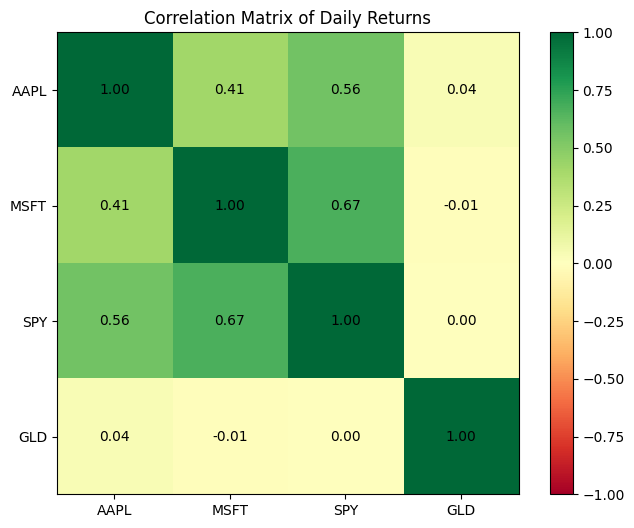
This is clearly more code than seaborn’s one-line sns.heatmap(). But notice that we have complete control:
ax.imshow()creates the colored gridWe manually add the text annotations with a loop
vmin=-1, vmax=1ensures the color scale is centered properly for correlations
For most purposes, use seaborn’s heatmap. But if you need very specific customization, now you know how matplotlib does it.
Professional chart styles#
Matplotlib comes with built-in styles that can instantly transform your charts to look like those from professional publications. Instead of manually setting colors, fonts, and backgrounds, you can apply a style with one line of code.
Let’s see what styles are available:
# See all available styles
print(plt.style.available)
['Solarize_Light2', '_classic_test_patch', '_mpl-gallery', '_mpl-gallery-nogrid', 'bmh', 'classic', 'dark_background', 'fast', 'fivethirtyeight', 'ggplot', 'grayscale', 'petroff10', 'seaborn-v0_8', 'seaborn-v0_8-bright', 'seaborn-v0_8-colorblind', 'seaborn-v0_8-dark', 'seaborn-v0_8-dark-palette', 'seaborn-v0_8-darkgrid', 'seaborn-v0_8-deep', 'seaborn-v0_8-muted', 'seaborn-v0_8-notebook', 'seaborn-v0_8-paper', 'seaborn-v0_8-pastel', 'seaborn-v0_8-poster', 'seaborn-v0_8-talk', 'seaborn-v0_8-ticks', 'seaborn-v0_8-white', 'seaborn-v0_8-whitegrid', 'tableau-colorblind10']
Some notable styles include:
fivethirtyeight— The style used by the data journalism site FiveThirtyEightggplot— Mimics the popular R plotting libraryseaborn— Clean, modern look (several variants available)bmh— Bayesian Methods for Hackers styledark_background— For presentations on dark slides
Let’s compare the same chart in different styles. We’ll use plt.style.context() which temporarily applies a style just for that chart.
# FiveThirtyEight style - bold, clean, great for data journalism
with plt.style.context('fivethirtyeight'):
fig, ax = plt.subplots(figsize=(10, 6))
ax.plot(stocks.index, stocks.aapl_o, label='AAPL')
ax.plot(stocks.index, stocks.msft_o, label='MSFT')
ax.set_title('Stock Prices - FiveThirtyEight Style')
ax.set_ylabel('Price ($)')
ax.legend()
plt.show()
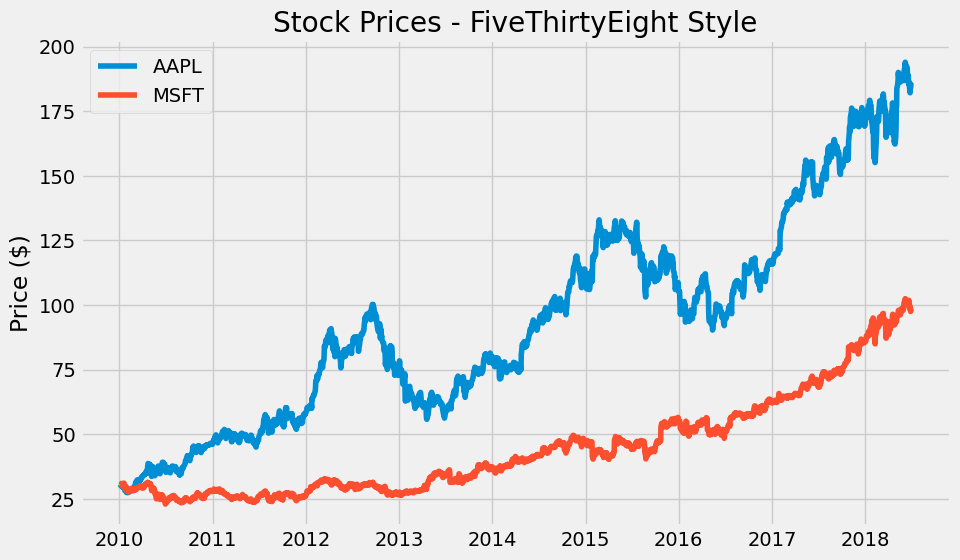
The FiveThirtyEight style features:
Gray background
Bold, thick lines
Large, readable fonts
Minimal chart junk
This style is great for blogs, presentations, and anywhere you want charts that pop.
# ggplot style - inspired by R's ggplot2, very popular in academia
with plt.style.context('ggplot'):
fig, ax = plt.subplots(figsize=(10, 6))
ax.plot(stocks.index, stocks.aapl_o, label='AAPL')
ax.plot(stocks.index, stocks.msft_o, label='MSFT')
ax.set_title('Stock Prices - ggplot Style')
ax.set_ylabel('Price ($)')
ax.legend()
plt.show()
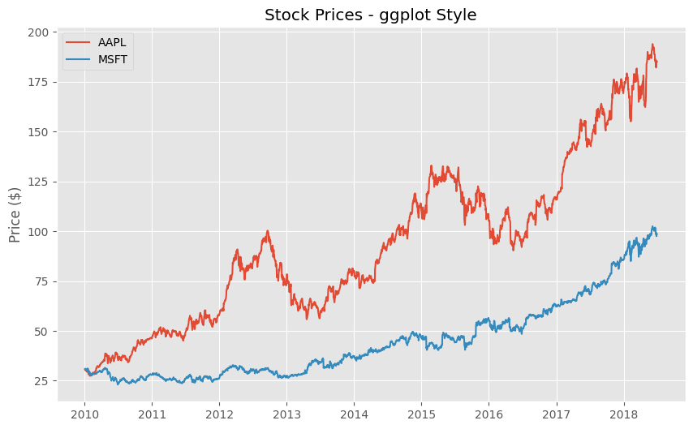
# Seaborn whitegrid - clean, minimal, professional
with plt.style.context('seaborn-v0_8-whitegrid'):
fig, ax = plt.subplots(figsize=(10, 6))
ax.plot(stocks.index, stocks.aapl_o, label='AAPL')
ax.plot(stocks.index, stocks.msft_o, label='MSFT')
ax.set_title('Stock Prices - Seaborn Whitegrid Style')
ax.set_ylabel('Price ($)')
ax.legend()
plt.show()
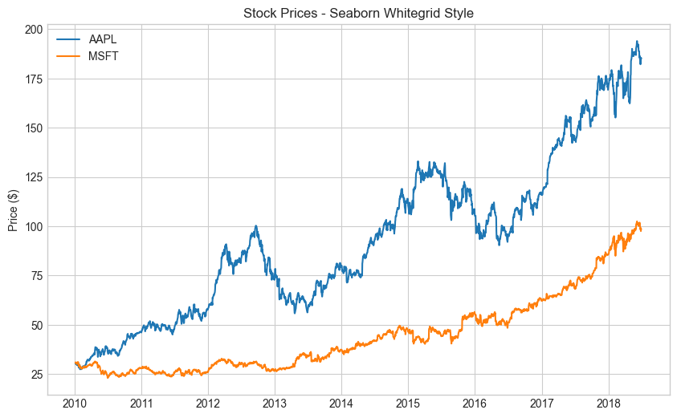
Creating an Economist/Financial Times style#
Publications like The Economist and Financial Times have distinctive chart styles: clean white backgrounds, minimal gridlines, specific color palettes, and particular fonts. While matplotlib doesn’t have these built-in, we can create something similar.
Here’s how to create a more “professional financial publication” look:
# Economist-inspired style
# The Economist uses: red accents, minimal design, serif fonts for titles
fig, ax = plt.subplots(figsize=(10, 6))
# Set white background
fig.patch.set_facecolor('white')
ax.set_facecolor('white')
# Plot with Economist-style colors (red is their signature color)
ax.plot(stocks.index, stocks.aapl_o, color='#E3120B', linewidth=2, label='AAPL') # Economist red
ax.plot(stocks.index, stocks.msft_o, color='#006BA2', linewidth=2, label='MSFT') # Blue accent
# Style the chart
ax.set_title('Stock Prices', fontsize=16, fontweight='bold', loc='left')
ax.set_ylabel('Price ($)', fontsize=12)
# Remove top and right spines (borders)
ax.spines['top'].set_visible(False)
ax.spines['right'].set_visible(False)
# Add subtle horizontal gridlines only
ax.yaxis.grid(True, linestyle='-', alpha=0.3, color='gray')
ax.xaxis.grid(False)
# Add a red bar at the top (Economist signature)
ax.axhline(y=ax.get_ylim()[1], color='#E3120B', linewidth=4)
ax.legend(frameon=False)
plt.tight_layout()
plt.show()
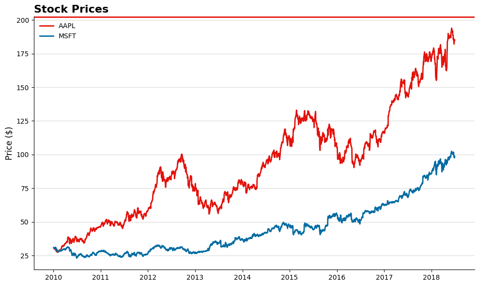
# Financial Times-inspired style
# FT uses: salmon/pink background, black lines, minimal design
fig, ax = plt.subplots(figsize=(10, 6))
# FT's signature salmon/pink background
fig.patch.set_facecolor('#FFF1E5') # FT background color
ax.set_facecolor('#FFF1E5')
# Plot with FT-style colors (darker colors that stand out on salmon)
ax.plot(stocks.index, stocks.aapl_o, color='#0D7680', linewidth=2.5, label='AAPL') # FT teal
ax.plot(stocks.index, stocks.msft_o, color='#593380', linewidth=2.5, label='MSFT') # FT purple
# Style the chart
ax.set_title('Stock Prices', fontsize=18, fontweight='bold', loc='left', color='#33302E')
ax.set_ylabel('Price ($)', fontsize=12, color='#33302E')
# Remove all spines
for spine in ax.spines.values():
spine.set_visible(False)
# Add subtle gridlines
ax.yaxis.grid(True, linestyle='-', alpha=0.4, color='#B6B6B6')
ax.xaxis.grid(False)
# Style tick labels
ax.tick_params(colors='#33302E')
ax.legend(frameon=False, labelcolor='#33302E')
plt.tight_layout()
plt.show()
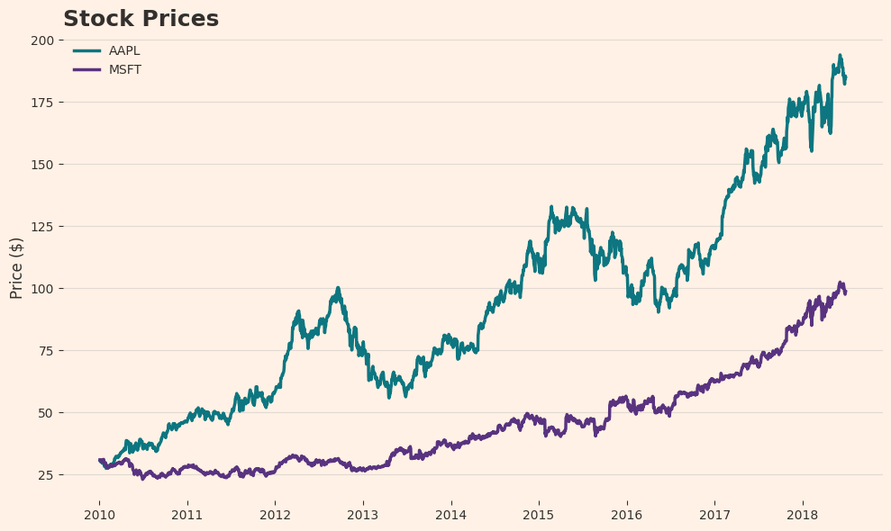
Key elements of professional financial chart styles:
Publication |
Signature Elements |
|---|---|
The Economist |
Red accents, white background, red bar at top, serif fonts, minimal gridlines |
Financial Times |
Salmon/pink background (#FFF1E5), teal and purple colors, no borders |
Wall Street Journal |
Blue color palette, clean lines, conservative styling |
Bloomberg |
Dark backgrounds, bright accent colors, data-dense |
Setting a style for your entire notebook#
If you want all your charts to use the same style, set it once at the top of your notebook:
Tip
When asking Claude or Copilot for charts, you can specify the style you want: “Create a line chart of stock prices in the style of The Economist with a red accent bar at the top” or “Make this chart look like a Financial Times visualization with a salmon background.”